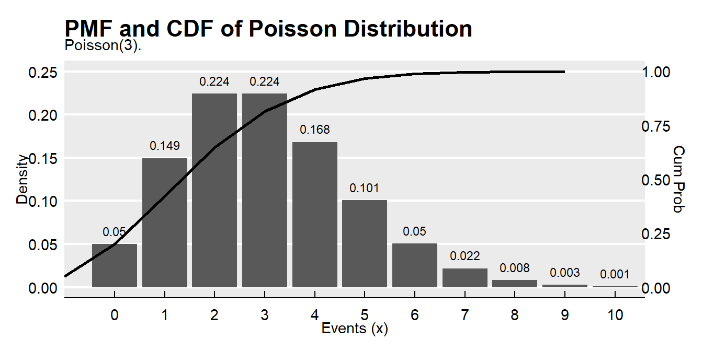
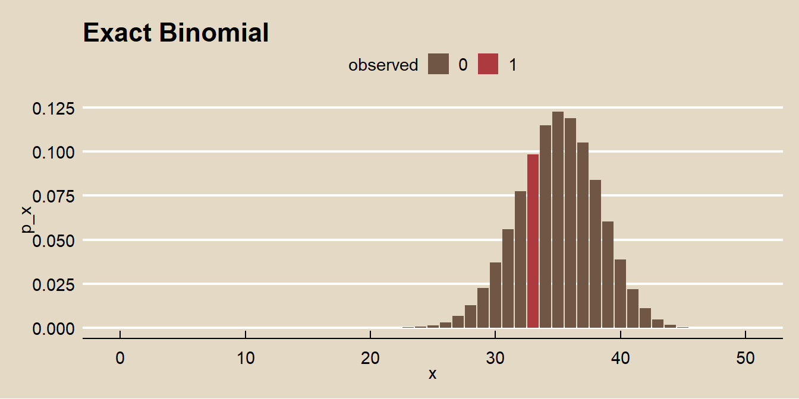

2.3 Poission
If \(X\) is the number of successes in \(n\) (many) trials when the probability of success \(\lambda / n\) is small, then \(X\) is a random variable with a Poisson distribution \(X \sim Poisson(\lambda)\)
\[f(x;\lambda) = \frac{e^{-\lambda} \lambda^x}{x!} \hspace{1cm} x \in (0, 1, ...), \hspace{2mm} \lambda > 0\]
with \(E(X)=\lambda\) and \(Var(X) = \lambda\).
The Poisson likelihood function is
\[L(\lambda; x) = \prod_{i=1}^N f(x_i; \lambda) = \prod_{i=1}^N \frac{e^{-\lambda} \lambda^x_i}{x_i !} = \frac{e^{-n \lambda} \lambda^{\sum x_i}}{\prod x_i}.\]
The Poisson loglikelihood function is
\[l(\lambda; x) = \sum_{i=1}^N x_i \log \lambda - n \lambda.\]
One can show that the loglikelihood function is maximized at
\[\hat{\lambda} = \sum_{i=1}^N x_i / n.\]
Thus, for a Poisson sample, the MLE for \(\lambda\) is just the sample mean.
Poisson sampling is used to model counts of events that occur randomly over a fixed period of time. Here is a simple analysis of data from a Poisson process. Data set dat contains frequencies of goal counts during the first round matches of the 2002 World Cup.
## goals freq
## 1 0 23
## 2 1 37
## 3 2 20
## 4 3 11
## 5 4 2
## 6 5 1
## 7 6 0
## 8 7 0
## 9 8 1The MLE of \(\lambda\) from the Poisson distribution is the sample mean.
## [1] 1.378947The 0.95 CI is \(\lambda \pm z_{.05/2} \sqrt{\lambda / n}\)
n <- sum(dat$freq)
z <- qnorm(0.975)
se <- sqrt(lambda / n)
paste0("[", round(lambda - z*se, 2), ", ", round(lambda + z*se, 2),"]")## [1] "[1.14, 1.62]"The expected probability of scoring 2 goals in a match is \(\frac{e^{-1.38} 1.38^2}{2!} = 0.239\).
## [1] 0.2394397events <- 0:10
density <- dpois(x = events, lambda = 3)
prob <- ppois(q = events, lambda = 3, lower.tail = TRUE)
df <- data.frame(events, density, prob)
ggplot(df, aes(x = factor(events), y = density)) +
geom_col() +
geom_text(
aes(label = round(density, 3), y = density + 0.01),
position = position_dodge(0.9),
size = 3,
vjust = 0
) +
geom_line(
data = df,
aes(x = events, y = prob/4),
size = 1) +
scale_y_continuous(sec.axis = sec_axis(~.*4, name = "Cum Prob")) +
theme_mf() +
scale_fill_mf() +
labs(title = "PMF and CDF of Poisson Distribution",
subtitle = "Poisson(3).",
x = "Events (x)",
y = "Density")
The expected probability of scoring 2 to 4 goals in a match is
## [1] 0.3874391Or, using the cumulative probability distribution,
## [1] 0.3874391How well does the Poisson distribution fit the 2002 World Cup data?
dat %>%
mutate(pred = n * dpois(x = goals, lambda = lambda)) %>%
rename(obs = freq) %>%
pivot_longer(cols = -goals) %>%
ggplot(aes(x = goals, y = value, color = name)) +
geom_point() +
theme_mf() +
scale_color_mf() +
geom_smooth(se = FALSE) +
labs(
title = "Poisson Dist: Observed vs Expected",
color = "",
y = "frequencey"
)
It fits the data pretty good!
\(Poison(\lambda) \rightarrow Bin(n, \pi)\) when \(n\pi = \lambda\) and \(n \rightarrow \infty\) and \(\pi \rightarrow 0\). Because the Poisson is limit of the \(Bin(n, \pi)\), it is useful as an approximation to the binomial when \(n\) is large (\(n>=20\)) and \(\pi\) small (\(p<=0.05\)).
For example, suppose a baseball player has a p=.03 chance of hitting a homerun. What is the probability of X>=20 homeruns in 500 at-bats? This is a binomial process because the sample size is fixed.
## [1] 0.07979678But \(n\) is large and \(\pi\) is small, so the Poission distribution will work well too.
## [1] 0.08297091What is the distribution of successes from a sample of n = 50 when the probability of success is p = .03?
n = 500
p = 0.03
x = 0:30
data.frame(
events = x,
Poisson = dpois(x = x, lambda = p * n),
Binomial = dbinom(x = x, size = n, p = p)
) %>%
pivot_longer(cols = -events) %>%
ggplot(aes(x = events, y = value, color = name)) +
geom_point() +
theme_mf() +
scale_color_mf() +
labs(title = "Poisson(15) vs. Bin(500, .03)",
subtitle = "Poisson approximation to binomial.",
x = "Events",
y = "Density",
color = "")
When the observed variance is greater than \(\lambda\) (overdispersion), the Negative Binomial distribution can be used instead of Poisson.
Suppose the probability that a drug produces a certain side effect is p = = 0.1% and n = 1,000 patients in a clinical trial receive the drug. What is the probability 0 people experience the side effect?
The expected value is np, 1. The probability of measuring 0 when the expected value is 1 is dpois(x = 0, lambda = 1000 * .001) = 0.3678794.
